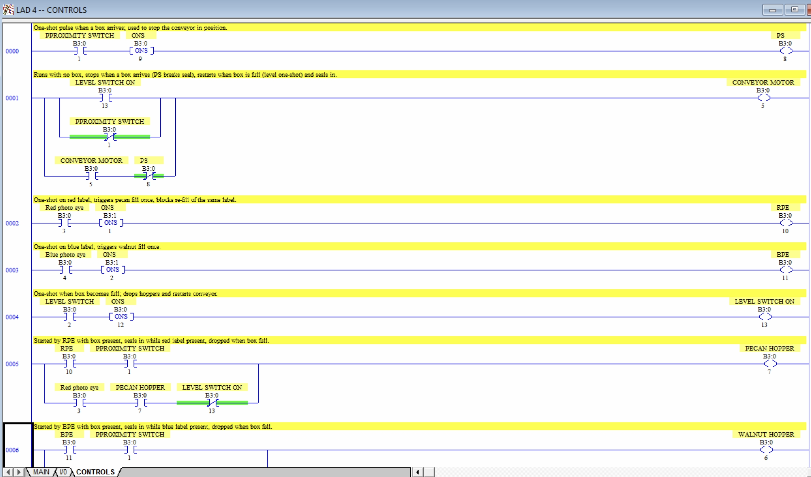
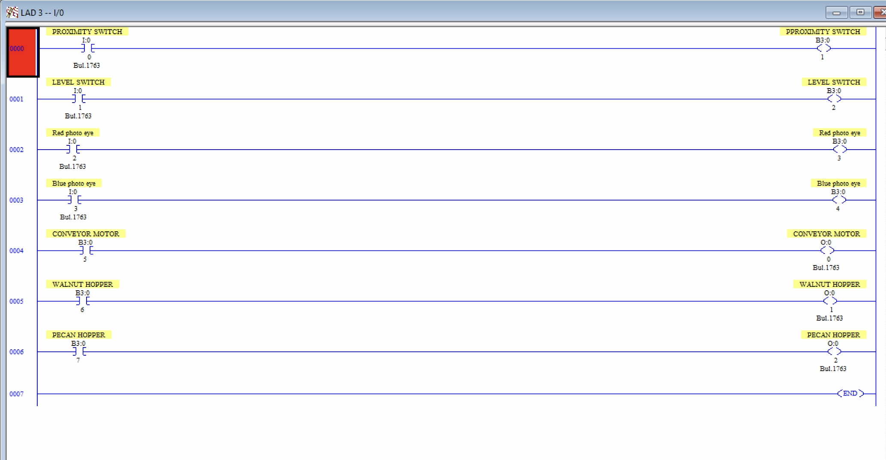

← All projects
Nut Filling Station
A conveyor-based filling station built in RSLogix 500. A proximity switch detects each box, a red or blue photo eye reads its label, and the matching hopper fills it (pecans for red, walnuts for blue) until a level switch says it's full.
I/O map
| Address | Device | Function |
|---|---|---|
I:0/0 | Proximity switch | Closes when a box is near |
I:0/1 | Level switch | Closes when the box is full |
I:0/2 | Red photo eye | Closes on a red label |
I:0/3 | Blue photo eye | Closes on a blue label |
O:0/0 | Conveyor motor | Runs the conveyor forward |
O:0/1 | Walnut hopper | Opens solenoid to release walnuts |
O:0/2 | Pecan hopper | Opens solenoid to release pecans |
Approach
I handled the process as one repeating cycle rather than a set of independent reactions:
- The conveyor runs whenever no box is in position. A one-shot off the proximity switch breaks that seal-in the instant a box arrives.
- Rising-edge one-shots on each photo eye fire the correct hopper once per box, so it can't re-open and overfill while the same label sits in front of the eye.
- A hopper only energizes while the proximity switch is made, so a label read with no box in place can't dump product on the floor.
- A one-shot off the level switch drops both hoppers and restarts the conveyor, ending the cycle and bringing in the next box.
Assumption: every box carries a red or blue label. An unlabeled box stops at the station without filling.
Validation
I force-tested every I/O point in Emulate 500 against the project's full pass/fail criteria: conveyor start and stop, correct hopper selection for each label, and cycle reset.
Ladder logic



